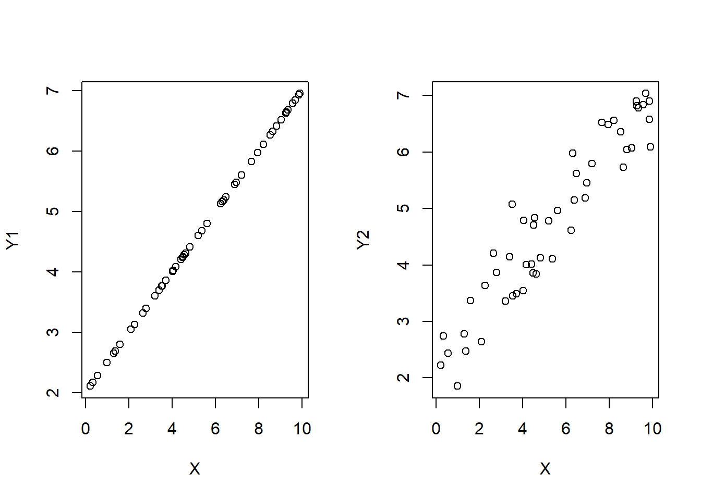

Chapter 7 Simple Linear Regression
Suppose you have two homes that are the same in every single way except for house size. Our intuition would suggest that bigger homes should cost more (all else equal) so we would expect that there is a positive relationship between house size and house price. In plain words: bigger homes cost more.
Saying bigger homes cost more is a qualitative statement because all we are saying is that the relationship between house size and house price is positive. What if we want to make a quantitative statement? In other words, while we are fairly confident that the actual house price (say, in dollars) will increase for every unit increase in house size (say, an additional square foot) - we want to know exactly what this average-price-per-square-foot is.
A Regression can measure the relationship between the mean value of one variable and corresponding values of other variables. In other words, it is a statistical technique used to explain average movements of one (dependent) variable, as a function of movements in a set of other (independent) variables.
This chapter will discuss the estimation, interpretation, and statistical inference of a simple linear regression model, which means that we will attempt to explain the movements in a dependent variable by considering one independent variable. This is the simplest regression model we can consider in order to understand what is going on under the hood of a regression. The next chapter will extend this analysis to multiple regression models where the only real different is that the number of independent variables exceeds one.
7.1 A Simple Linear Regression Model
A Linear Regression model is simply a line equation.
The simplest example of a line equation is:
\[Y_i=\beta_0+\beta_1X_i\]
The betas, \(\beta_0\) and \(\beta_1\) are called line coefficients.
- \(\beta_0\) is the constant or intercept term
- \(\beta_1\) is the slope term - it determines the change in Y given a change in X
\[\beta_1=\frac{Rise}{Run}=\frac{\Delta Y_i}{\Delta X_i}\]
7.1.1 What does a regression model imply?
\[Y_i=\beta_0+\beta_1X_i\]
When we write down a model like this, we are imposing a huge amount of assumptions on how we believe the world works.
First, there is the Direction of causality. A regression implicitly assumes that changes in the independent variable (X) causes changes in the dependent variable (Y). This is the ONLY direction of causality we can handle, otherwise our analysis would be confounded (what causes what) and not useful.
Second, The equation assumes that information on the independent variable (X) is all the information you need to explain the dependent variable (Y). In other words, if we were to look at pairs of observations of X and Y on a plot, then the above equation assumes that all observations (data points) line up exactly on the regression line.
This would be great if the observations look like the figure on the left, but not if they look like ones on the right.
It would be extremely rare for the linear model (as detailed above) to account for all there is to know about the dependent variable Y…
There might be other independent variables that explain different parts of the dependent variable (i.e., multiple dimensions). (more on this next chapter)
There might be measurement error in the recording of the variables.
There might be an incorrect functional form - meaning that the relationship between the dependent and independent variable might be more sophisticated than a straight line. (more on this next chapter)
There might be purely random and therefore totally unpredictable variation in the dependent variable.
This last item can be easily dealt with!
Adding a stochastic error term (\(\varepsilon_i\)) to the model will effectively take care of all sources of variation in the dependent variable (Y) that is not explicitly captured by information contained in the independent variable (X).
7.1.2 The REAL Simple Linear Regression Model
\[Y_i=\beta_0+\beta_1X_i+\varepsilon_i\]
The Linear Regression Model now explicitly states that the explanation of the dependent variable \((Y_i)\) can be broken down into two components:
A Deterministic Component: \(\beta_0+\beta_1X_i\)
A Random / Stochastic / Explainable Component: \(\varepsilon_i\)
Lets address these two components in turn.
The Deterministic Component:
\[\hat{Y}_i=\beta_0+\beta_1X_i\]
The deterministic component delivers the expected (or average) value of the dependent variable (Y) given a values for the coefficients (\(\beta_0\) and \(\beta_1\)) and a value of the dependent variable (X).
Since X is given, it is considered deterministic (i.e., non-stochastic)
In other words, the deterministic component determines the mean value of Y associated with a particular value of X. This should make sense, because the average value of Y is the best guess.
Technically speaking, the deterministic component delivers the expected value of Y conditional on a value of X (i.e., a conditional expectation).
\[\hat{Y}_i=\beta_0+\beta_1X_i=E[Y_i|X_i]\]
The Unexpected (Garbage Can) Component
\[\varepsilon_i=Y_i-\hat{Y}_i\]
Once we obtain the coefficients, we can compare the observed values of \(Y_i\) with the expected value of \(Y_i\) conditional on the values of \(X_i\).
The difference between the true value and the expected value is by definition… unexpected!
This unexpected discrepancy is your prediction error - and everything your deterministic component cannot explain is deemed random and unexplainable.
If a portion of the dependent variable is considered random and unexplainable - then it gets thrown away into the garbage can (\(\varepsilon_i\)).
This is a subtle but crucial part of regression modeling…
Your choice of the independent variable(s) dictate what you believe to be important in explaining the dependent variable.
The unimportant (or random) changes in the dependent variable that your independent variables cannot explain end up in the garbage can by design.
Therefore, the researcher essentially chooses what is important, and what gets thrown away into the garbage can.
YOU are the researcher, so YOU determine what goes into the garbage can!
7.2 Application: Predicting House Price Based on House Size
Let’s consider an application where we attempt to explain the price of a house (in thousand US$) by the size of a house (in square feet). We start by establishing the theory and relating it to our statistical terminology.
The Population Regression Function:
\[Price_i = \beta_0 + \beta_i Size_i + \varepsilon_i\]
\(Price_i\) is the dependent variable (\(Y_i\))
\(Size_i\) is the independent variable (\(X_i\))
The equation above is the true (but unknown), population regression function.
The coefficients (\(\beta_0\) and \(\beta_1\)) are the population regression coefficients!
They are the coefficients you would obtain if you had every possible observation (i.e., the population)
This ain’t gonna happen…
We need to obtain the estimated, sample regression coefficients. To do this, we need to collect a sample of observations.
The Sample
In order to obtain sample estimates of our regression model above, we must obtain a sample of observations. We collect a (random) sample of size N. This is where the subscript i comes in - indicating that in general, each individual observation can be identified as \(i=1,...,N\). The sample estimates are based on the sample.
Hypothetically, we can obtain different estimated coefficients for every different sample… but we will address that later.
To facilitate this application, we will use a data set internal to R, called hprice1.
data(hprice1,package='wooldridge')
names(hprice1)## [1] "price" "assess" "bdrms" "lotsize" "sqrft" "colonial" "lprice" "lassess" "llotsize"
## [10] "lsqrft"This data set contains 88 observations of homes where each home has 10 pieces of information called variables. We are only concerned with two variables at the moment - the house price (price) and the house size (sqrft).
summary(hprice1$price)## Min. 1st Qu. Median Mean 3rd Qu. Max.
## 111.0 230.0 265.5 293.5 326.2 725.0summary(hprice1$sqrft)## Min. 1st Qu. Median Mean 3rd Qu. Max.
## 1171 1660 1845 2014 2227 3880We know that:
the average house price is $293,500
50% of the observations are between the 1st and 3rd quartiles of $230,000 and $326,200
the minimum house price in the sample is $111,000
the maximum house price in the sample is $725,000. You can look at the summary output for the size variable and make similar statements.
The Sample Regression Function
We combine our Population Regression Function (PRF) and our data sample to estimate a Sample Regression Function (SRF).
\[Price_i=\hat{\beta}_0+\hat{\beta}_1Size_i+e_i\]
The difference between the SRF and the PRF are very important.
The PRF coefficients are population parameters while the SRF coefficients are sample statistics. In other words, the SRF coefficients are actual numbers that correspond to our sample, and we use them to draw inference on the things we really want to talk about - the PRF coefficients.
The difference between the SRF residual \((e_i)\) and the PRF residual \((\varepsilon_i)\) is along the same lines as the difference between the SRF and PRF coefficients. The SRF residual contains the unexplained variability of the dependent variable in the sample while the PRF residual theoretically contains the unexplained variability in the population.
We will get into the details about how these regression estimates can be obtained later. Right now, lets just arrive at our estimates and shed light on the big picture.
Y <- hprice1$price
X <- hprice1$sqrft
REG <- lm(Y~X)
coef(REG)## (Intercept) X
## 11.204145 0.140211Our regression estimates are \(\hat{\beta}_0=11.2\) and \(\hat{\beta}_1=0.14\). This delivers a prediction equation from our SRF as:
\[\hat{Price}_i=11.2+0.14Size_i\]
Where \(\hat{Y}_i=\hat{Price}_i\) is the expected house price conditional on a particular size.
We can illustrate the results of the regression as follows:
par(mfrow = c(1,2))
plot(X, Y,
xlab = "Size (Sq. Ft.)",
ylab = "Price (1000$)")
lines(X,fitted(REG),col = 'blue')
plot(X,residuals(REG),
xlab = "Size (Sq. Ft.)",
ylab = "Residuals")
abline(h = 0)
In the left figure, the dots are a scatter-plot of the actual observations of house price (Y) and house size (X) while the blue line is our estimated regression which delivers the expected house price for each observation of house size. Note that every time an actual house price is different than the expected value from the regression - then that difference is considered unexpected and ends up in the garbage can (residual). The residual values are in the right figure. Note that the residual values are centered around the zero line - this means that the unexpected component of house price is equal to zero on average.
Analysis of the SRF
We can get plenty of mileage out of our estimated SRF.
- We can interpret the estimated coefficients (one at a time) to get a sense of how house size influences house price.
\(\hat{\beta}_0=11.2\) is the estimated intercept term. Mathematically, it is the expected value of the dependent variable conditional on the independent variable being 0 \((E[Y_i|X_i=0]=11.2)\). In the context of this problem, we are saying that the expected price of a house that has 0 square feet in size is 11.2 thousand dollars. If that sounds funny to you… it should. The take away is that an intercept term always has a mathematical interpretation, but it might not always make sense. The key is if an independent value of zero (i.e., \(X=0\)) makes sense.
\(\hat{\beta}_1=0.14\) is the estimated slope term. Mathematically, it is the expected change in value of the dependent variable given a unit-increase in the independent variable \((\Delta Y_i/\Delta X_i=0.14)\). In the context of this problem, we are saying that the expected price of a house will increase by 0.14 thousand dollars ($140) for every (square-foot) increase in house size. If you were a realtor, you can now state that somebody looking for a home would be paying $140 per square foot of house size on average.
- We can use the model for forecasting purposes.
To illustrate a forecast, suppose you came across a 1,800 square-foot house with a selling price of $250,000. Does this seem like a fair price? In order to answer this question with our estimated results, we simply plug 1800 square-feet as a value for our independent variable and arrive at an expected price conditional on this house size.
\[\hat{Price}_i=11.2+0.14(1800)=263.6\]
Bhat0 <- summary(REG)$coef[1,1]
Bhat1 <- summary(REG)$coef[2,1]
(Yhat = Bhat0 + Bhat1 * 1800)## [1] 263.5839Our regression forecast states that an 1,800 square-foot house should have an average price of $263,000. Since this is more than the $250,000 of the house in question, then the regression model suggests that this is a fair price.
Discussion
While our model appears pretty useful, we must always be mindful of the limitations of our model. Namely, our regression assumes that house size is the only thing that matters when predicting house price. Our candidate house is more than $10,000 below the average 1,800 square-foot house price in the sample, but this might be due to very relevant things that our model considers unpredictable.
- Is the house located next to the town dump?
- Is the house built on top of an ancient burial ground?
- Does it have a really ugly kitchen?
- Does the roof leak?
The bottom line is that one should always view our regression estimates within the lens of its limitations. This isn’t to say that the estimates are incorrect or wrong, because they are actually quite useful. However, understanding how far one can take regression results is important.
7.3 Ordinary Least Squares (OLS)
Ordinary Least Squares (OLS, for short) is a popular method for estimating the unknown parameters in a linear regression model. OLS chooses the parameters of a linear function by minimizing the sum of the squared differences between the observed dependent variable (values of the variable being observed) in the given data set and those predicted by the linear function.
To illustrate this, consider a sample of observations and a PRF:
\[Y_i=\beta_0+\beta_1X_i+\varepsilon_i\]

Look at the figure and try to imagine the best fitting straight line that goes through all observations in the scatter plot. This line has two features: and intercept term \((\hat{\beta}_0)\) and a slope term \((\hat{\beta}_1)\). Which values would you assign?
We can go about this a little more formally. First, if we had values for \(\hat{\beta}_0\) and \(\hat{\beta}_1\), then we can determine the residual (error) for each pair of \(Y_i\) and \(X_i\).
\[e_i = Y_i - (\hat{\beta}_0 + \hat{\beta}_1X_i)\]
We can sum across all observations to get the total error
\[\sum_{i}e_i = \sum_{i}(Y_i - \hat{\beta}_0 - \hat{\beta}_1X_i)\]
The problem we face now is that error terms can be both positive and negative. That means they will start to wash each other out when we sum them up and we therefore get an incomplete measure of the total error. To prevent the positive and negative error terms from washing each other out, we square each of the terms. This makes the negative errors positive, while the positive errors stay positive.
\[\sum_{i}e^2_i = \sum_{i}(Y_i - \hat{\beta}_0 - \hat{\beta}_1X_i)^2\]
Note: this is where the sum of squared errors comes in.
Notice that this function now states that we can calculate the sum of squared errors for any given values of \(\hat{\beta}_0\) and \(\hat{\beta}_1\). We can therefore find the best values of \(\hat{\beta}_0\) and \(\hat{\beta}_1\) that deliver the lowest sum of squared errors. The line that delivers the lowest squared errors is what we mean by the best line.
\[min\sum_{i}e^2_i = min_{(\hat{\beta}_0,\hat{\beta}_1)}\sum_{i}(Y_i - \hat{\beta}_0 - \hat{\beta}_1X_i)^2\]
This function is called an objective function, and we can minimize the sum of squared errors by taking first-order conditions (i.e., the derivative of the objective function with respect to \(\hat{\beta}_0\) and \(\hat{\beta}_0\)).
\[\hat{\beta}_1=\frac{\sum_i (X_i-\bar{X})(Y_i-\bar{Y})}{\sum_i(X_i-\bar{X})^2}=\frac{cov(X,Y)}{var(X)}\]
\[\hat{\beta}_0=\bar{Y}-\hat{\beta}_1\bar{X}\]
Where a ‘bar’ term over a variable represents the mean of that variable (i.e., \(\bar{X}=\frac{1}{n}\sum_iX_i\))
These two equations are important. The first equation states that the slope of the line equation \((\hat{\beta}_1)\) is equal to the ratio between the covariance of Y and X and the variance of X. Remember that a covariance measures how two variables systematically move together. If they tend to go up at the same time, then they have a positive covariance. If they tend to go down - a negative covariance. If they do not tend to move together in any systematic way, then they have zero covariance. This systematic movement is precisely what helps determine the slope term. The second equation states that with \(\hat{\beta}_1\) determined, we can determine \(\hat{\beta}_0\) such that the regression line goes through the means of the dependent and independent variables.
Lets see what these estimates and the resulting regression line look like.
REG <- lm(Y~X)
coef(REG)## (Intercept) X
## 37.285126 -5.344472plot(X,Y,
xlab = "Weight (Tons)",
ylab = "Fuel Efficiency (MPG)")
lines(X,fitted(REG),col='blue')Now you probably imagined a line that looked kinda like this, but we know that this line (with these coefficients) is the absolute best line that minimizes the total difference between the observations (the dots) and the predictions (the line). We can see what this difference looks like by looking at the residuals.
plot(X,residuals(REG),
xlab = "Weight (Tons)",
ylab = "Residuals")
abline(h = 0,col="blue")Notice that these residual values are distributed both above and below the zero line. If you were to sum them all up - then you get zero ALWAYS. It is what the mathematical problem is designed to do!
\[\sum_ie_i=0\]
This mathematical outcome is actually important. First, if the residuals or forecast errors sum up to zero, then that means that they have a mean that is also 0 \((\bar{e}=0)\). This means that they are zero on average, so the expected value is zero!
\[E[e_i]=0\]
If the expected value of the forecast error is zero, then this means that our regression line is correct on average. If we think about it, this is the best we can ask for our of a regression function.
7.3.1 B.L.U.E.
OLS is a powerful estimation method that delivers estimates with the following properties.
They are the BEST in a minimized mean-squared error sense. We just showed this.
They are LINEAR insofar as the OLS method can be quickly used when the regression model is a linear equation.
They are UNBIASED meaning that the sample estimates are true estimates of the population parameters.
Therefore, BEST, LINEAR, UNBIASED, ESTIMATES is why the output of an OLS method is said to be B.L.U.E.
7.4 Decomposition of Variance
Using our regression estimates and sample information, we can construct one of the most popular measures of goodness of fit for a regression. We will construct this measure in pieces.
First, the total sum of squares (or TSS) can be calculated to measure the total variation in the dependent variable:
\[TSS = \sum^{N}_{i=1}(Y_i - \bar{Y})^2\]
This expression is similar to a variance equation (without averaging), and since the movements in the dependent variable is ultimately what we are after, this measure delivers the total variation in the dependent variable that we would like our model to explain.
Next, we can use our regression estimates to calculate an estimated sum or squares (or ESS) which measures the total variation in the dependent variable that our model actually explained:
\[ESS = \sum^{N}_{i=1}(\hat{Y}_i - \bar{Y})^2\]
Note that this measure uses our conditional forecasts from our regression model in place of the actual observations of the dependent variable.
\[\hat{Y}_i = \hat{\beta}_0 + \hat{\beta}_1 X_i\]
Finally, we can use our regression estimates to also calculate a residual sum or squares (or RSS) which measures the total variation in the dependent variable that our model cannot explain:
\[RSS = \sum^{N}_{i=1}(Y_i - \hat{Y}_i)^2 = \sum^{N}_{i=1}e_i^2\]
Note that this is a measure of the variation in the garbage can, and the garage can is where all of the variation in the dependent variable that your model cannot explain ends up.
7.4.1 The \(R^2\)
Our a regression breaks the variation in \(Y_i\) (the TSS) into what can be explained (the ESS) and what cannot be explained (the RSS). This essentially means \(TSS=ESS+RSS\). Furthermore, our OLS estimates attempt to maximize the ESS and minimize the RSS. This delivers our first measure of how well our model explains the movements in the dependent variable or goodness of fit
\[R^2 = \frac{ESS}{TSS} = 1 - \frac{RSS}{TSS}\]
This coefficient of determination or \(R^2\) should be an intuitive measure. First, it is bounded between 0 and 1. If the measure is 0 then the model explains NOTHING and all variation is in the garbage can. If the measure is 1 then the model explains EVERYTHING and the garbage can is empty. Any number in between is simply the proportion of the variation in the dependent variable explained by the model.
REG3 <- lm(price ~ sqrft, data = hprice1)
summary(REG3)$r.squared## [1] 0.6207967pander(summary(REG3))| Estimate | Std. Error | t value | Pr(>|t|) | |
|---|---|---|---|---|
| (Intercept) | 11.2 | 24.74 | 0.4528 | 0.6518 |
| sqrft | 0.1402 | 0.01182 | 11.87 | 8.423e-20 |
| Observations | Residual Std. Error | \(R^2\) | Adjusted \(R^2\) |
|---|---|---|---|
| 88 | 63.62 | 0.6208 | 0.6164 |
Returning to our house price application above, you can see that our coefficient of determination \((R^2)\) is 0.62.6 This states that approximately 62 percent of the variation in the prices of homes in our sample is explained by the size of the house (in square feet), while the remaining 38 percent is unexplained by our model and shoved into the garbage can. That is all it says… no more and no less.
7.4.2 What is a good \(R^2\)?
Is explaining 62 percent of the variation in house prices good? The answer depends on what you want the model to explain. We know that these house size explains a majority of the variation in house prices while all other potential independent variables will explain at most the remaining 38 percent. If you want to explain everything there is to know about house prices, then an \(R^2\) of 0.62 leaves something to be desired. If you only care to understand the impact of size, then the \(R^2\) tells you how much of the variation in house prices it explains. There really isn’t much more to it than that.
7.4.3 Standard Error of the Estimate
\[S_{YX} = \sqrt{\frac{RSS}{n-2}} = \sqrt{\frac{\sum^{N}_{i=1}e_i^2}{n-2}}\]
The standard error of the estimate is much like a standard deviation equation. However, while the standard deviation measures the variability around a mean, the standard error of the estimate measures the variability around the prediction line.
Note that the denominator of this measure is \(n-2\). The reason that we are averaging the sum of squared errors by \(n-2\) is because we lost two degrees of freedom. Recall that we lose a degree of freedom whenever we need to estimate something based on other estimates. When we consider how we calculated the residuals in the first place,
\[ e_i = Y_i - \hat{Y}_i = Y_i - \hat{\beta}_0 - \hat{\beta}_1 \; X_i\]
you will see that we had to estimate two line coefficients before we can determine what the prediction error is. That is why we deduct two degrees of freedom.7
7.5 Assumptions of the Linear Regression Model
An empirical regression analysis always begins with a statement of the population regression function (PRF). The PRF explicitly states exactly how you (the researcher) believes the independent variable is related to the dependent variable. One thing to be clear about when stating a PRF is that you are imposing a great deal of assumptions on how the world works. If your assumptions are correct, then the PRF is a reasonable depiction of reality and OLS will uncover accurate estimates of the PRF parameters. If your assumptions are incorrect, then the estimates are highly unreliable and might actually be misleading.
Verifying the assumptions of a linear regression model is a majority of the work involved with an empirical analysis, and we will be doing this for the rest of the course. Before getting into the details of how to verify the assumptions, we first need to know what they are.
One should note that these are not assumption of our model, because these assumption are actually imposed on our model. These assumptions are made on the world - at least on the relationship between the dependent and independent variables.
The main assumptions of a linear regression model that we will focus on are as follows.
Linearity: the true relationship (in the world) is in fact linear. This assumption must hold because you are estimating a linear model (hence the assumption is imposed).
Independence of Errors: the forecast errors \((e_i)\) are not correlated with each other
Equal Variance (homoskedasticity): the variance of the error term is constant
Normality of Errors: the forecast errors comprise a normal distribution
7.5.1 Linearity
If we write down the following PRF:
\[Y_i = \beta_0 + \beta_1X_{1i}+\varepsilon_i\]
we are explicitly assuming that this accurately captures the real world. In particular,
The relationship between \(Y_i\) and \(X_1i\) are in fact linear. This means that the a straight-line (i.e., a constant slope) fits the relationships between the dependent variable and independent variables better than a nonlinear relationship.
The error term (i.e., the garbage can) is additive, meaning that the forecast errors are separable from the forecasts.
If these assumptions differ from the relationship that is going on in reality, then our model will suffer from bias. The SRF estimates will not be good representations of the PRF parameters, and they should not be interpreted as such.
There is an entire section devoted to relaxing the linearity assumption later on, but consider a stark example to illustrate a violation of this assumption. In particular, suppose you consider a simple linear regression model to uncover the relationship between a dependent variable and an independent variable.
\[Y_i=\beta_0+\beta_1X_i+\varepsilon_i\]
However, suppose the true relationship (shown in the figure) is clearly nonlinear, and the blue line in the figure is the estimated (linear) SRF. As the line suggests, it is horizontal suggesting that the linear relationship between Y and X is zero. This doesn’t mean that there is no relationship - because there clearly is. However, our assumption of this relationship being linear is incorrect because the results tell us that there is no linear relationship.

7.5.2 Independence of Errors
Serial correlation exists when an observation of the error term is correlated with past values of itself. This means that the errors are not independent of each other.
\[\varepsilon_t=\rho \varepsilon_{t-1}+\nu_t\]
If this is the case, the model violates the idea that the errors are completely unpredictable. If we would be able to view our past mistakes and improve upon our predictions - why wouldn’t we?
7.5.3 Equal Variance
The error term must have a constant variance throughout the range of each independent variable because we will soon see that the confidence we place in our estimates are partially determined by this variance. We are unable to change our confidence in the estimates throughout the analysis - it is one size fits all. Therefore, the size of the errors (i.e., the dispersion in the garbage can) must be constant throughout.

Suppose you wanted to estimate how much of an additional dollar of income the population would spend on consumption.8 Your data set has 50 household observations from each of three annual income levels: $10,000, $75,000, and $150,000 as well as their annual consumption expenditures. As the figure illustrates, households earning around $10,000 a year all have roughly the same consumption level (because they all save very little). As income levels increase, you see more dispersion in consumption expenditures because more income is paired with more options. Households earning $150,000 annually could choose to save a majority of it or even go into debt (i.e. spend more than $150,000). This data could be used to estimate a regression line (illustrated in black), but you can see that the model looks like it does a poorer and poorer job of predicting consumption expenditures as the income levels increase. This means that the forecast errors are increasing as income levels increase, and this is heteroskedasticity. We will briefly come back to potential solutions to this later in the advanced topics section.
7.5.4 Normality of Errors
We know that OLS will produce forecast errors that have a mean of zero as well as a variance that is as low as possible by finding the best fitting straight line. The assumption that these are now the two moments that can be used to describe a normal distribution comes directly from the Central Limit Theorem and the concept of a sampling distribution. Recall that the population error term is zero on average and has some nonzero variance. A random sample of these error terms should have similar characteristics, as well as comprising a normal distribution.
7.6 Statistical Inference
Once the assumptions of the regression model have been verified, we are able to perform statistical inference. Since we are now dealing with a regression model, not only are we able to calculate confidence intervals and conduct hypothesis tests on the population coefficients, but we are able to perform statistical inference on the forecasts of the model as well.
7.6.1 Confidence Intervals (around population parameters)
Recall our earlier formula for calculating a confidence interval in a single-variable context:
\[Pr\left(\bar{X}-t_{(\frac{\alpha}{2},df=n-1)}\frac{S}{\sqrt{n}} \leq \mu \leq \bar{X}+t_{(\frac{\alpha}{2},df=n-1)}\frac{S}{\sqrt{n}}\right)=1-\alpha\]
We used the CLT to ultimately state that \(\bar{X}\) was drawn from a normal distribution with a mean of \(\mu\) and standard deviation \(\sigma/\sqrt{n}\) (but we only have \(S\) which makes this a t distribution). This line of reasoning is very similar to what we have with regression analyses.
First, \(\hat{\beta}\) is an estimate of \(\beta\) just like \(\bar{X}\) is an estimate of \(\mu\). However, the standard error of the sampling distribution of \(\hat{\beta}\) is derived from the standard deviation of the residuals.
\[S_\beta=\frac{S_{YX}}{\sum{(X_i-\bar{X})^2}}\]
This means that we construct a standardized random variable from a t distribution with \(n-2\) degrees of freedom.
\[t=\frac{\hat{\beta}-\beta}{S_\beta}\]
We have already derived a confidence interval before, so we can skip to the punchline.
\[Pr\left(\hat{\beta}-t_{(\frac{\alpha}{2},df=n-2)}S_\beta \leq \beta \leq \hat{\beta}+t_{(\frac{\alpha}{2},df=n-2)}S_\beta\right)=1-\alpha\]
This is the formula for a confidence interval around the population slope coefficient \(\beta\) given the estimate \(\hat{beta}\) and the regression characteristics. It can also be written compactly as before.
\[\hat{\beta} \pm t_{(\frac{\alpha}{2},df=n-2)} S_b\]
Recall our regression explaining differences in house prices give information on house sizes.
pander(summary(REG3))| Estimate | Std. Error | t value | Pr(>|t|) | |
|---|---|---|---|---|
| (Intercept) | 11.2 | 24.74 | 0.4528 | 0.6518 |
| sqrft | 0.1402 | 0.01182 | 11.87 | 8.423e-20 |
| Observations | Residual Std. Error | \(R^2\) | Adjusted \(R^2\) |
|---|---|---|---|
| 88 | 63.62 | 0.6208 | 0.6164 |
The information included in the regression summary is all that is needed for us to construct a 95 percent \((\alpha=0.05)\) confidence interval around the population slope coefficient \(\beta_1\).
# Back out all of the needed information:
Bhat1 <- summary(REG3)$coef[2,1]
SBhat1 <- summary(REG3)$coef[2,2]
N <- length(residuals(REG3))
# Find the critical t-distribution values... same as before
AL <- 0.05
df <- N-2
tcrit <- -qt(AL/2,df)
# Use the formula... same as before
(LEFT <- Bhat1 - tcrit * SBhat1)## [1] 0.1167203(RIGHT <- Bhat1 + tcrit * SBhat1)## [1] 0.1637017\[Pr(0.1167 \leq \beta_1 \leq 0.1637)=0.95\]
This states that while an increase in house size by one square foot will increase the house price by $140 \((\hat{\beta_1})\) on average in the sample, we can also state that an increase in house size by one square foot will increase the house price in the population somewhere between $116.70 and $163.70 with 95% confidence.
While the code above showed you how to calculate a confidence interval from scratch as we did before, there is an easier (one-line) way in R:
confint(REG3)## 2.5 % 97.5 %
## (Intercept) -37.9825309 60.3908210
## sqrft 0.1167203 0.16370177.6.2 Hypothesis Tests
We are able to conduct hypothesis tests regarding the values of the population regression coefficients. For example:
\[H_0:\beta_1 = 0 \quad vs. \quad H_1:\beta_1 \neq 0\]
In the context of our house price application, this null hypothesis states that the population slope between house price and size is zero… meaning that there is no relationship between the two variables.
Given the null hypothesis above, we follow the remaining steps laid out previously: we calculate a test statistic under the null, calculate a p-value, and conclude.
The test statistic under the null is given by
\[t=\frac{\hat{\beta}_1 - \beta_1}{S_{\beta_1}}\]
and this test statistic is drawn from a t distribution with \(n-2\) degrees of freedom. Concluding this test is no more difficult that what we’ve done previously.
B1 = 0
(tstat <- (Bhat1 - B1)/SBhat1)## [1] 11.86555(Pval <- pt(tstat,N-2,lower.tail=FALSE)*2)## [1] 8.423405e-20(1-Pval)## [1] 1Our results state that we can reject this null hypothesis with approximately 100% confidence, meaning that there is a statistically significant relationship between house prices and house sizes.
As with the confidence interval exercise above, we actually do not need to conduct hypothesis tests where the null sets the population parameter to zero because R does this automatically. If you look again at columns to the right of the estimated coefficient \(\hat{\beta}_1\), you will see a t value that is exactly what we calculated above and a p value that is essentially zero. This implies that a test with the null hypothesis set to zero is always done for you.
summary(REG3)##
## Call:
## lm(formula = price ~ sqrft, data = hprice1)
##
## Residuals:
## Min 1Q Median 3Q Max
## -117.112 -36.348 -6.503 31.701 235.253
##
## Coefficients:
## Estimate Std. Error t value Pr(>|t|)
## (Intercept) 11.20415 24.74261 0.453 0.652
## sqrft 0.14021 0.01182 11.866 <2e-16 ***
## ---
## Signif. codes: 0 '***' 0.001 '**' 0.01 '*' 0.05 '.' 0.1 ' ' 1
##
## Residual standard error: 63.62 on 86 degrees of freedom
## Multiple R-squared: 0.6208, Adjusted R-squared: 0.6164
## F-statistic: 140.8 on 1 and 86 DF, p-value: < 2.2e-16This isn’t to say that all hypothesis tests are automatically done for you. Suppose a realtor believes that homes sell for $150 per square foot. This delivers the following hypotheses, followed by a test statistic, p-value, and conclusion.
\[H_0:\beta_1=0.150 \quad vs. \quad H_1:\beta_1\neq0.150\]
B1 = 0.150
(tstat <- (Bhat1 - B1)/SBhat1)## [1] -0.8284098(Pval <- pt(tstat,N-2)*2)## [1] 0.4097316(1-Pval)## [1] 0.5902684Our p-value of 0.41 implies that there is a 41% chance of being wrong if we reject the null hypothesis. We therefore do not have evidence that the population slope is different from 0.150… so we do not reject.
One-sided tests are also like before. Suppose a realtor believes that homes sell more than $160 per square foot. This delivers the following hypotheses, followed by a test statistic, p-value, and conclusion.
\[H_0:\beta_1\leq0.160 \quad vs. \quad H_1:\beta_1>0.160\]
B1 = 0.160
(tstat <- (Bhat1 - B1)/SBhat1)## [1] -1.674674(Pval <- pt(tstat,N-2))## [1] 0.04881561(1-Pval)## [1] 0.9511844Our test concludes that we can reject the null with at most 95.11% confidence.
7.6.3 Confidence Intervals (around forecasts)
A regression can also build confidence intervals around the conditional expectations (i.e., forecasts) of the dependent variable.
Suppose you want to use our model to predict the price of a 1000 square foot house. The conditional expectation is calculated by using our regression coefficients, a value of house size of 1000, and setting our forecast error to zero.
X = 1000
Bhat0 = summary(REG3)$coef[1,1]
Bhat1 = summary(REG3)$coef[2,1]
(Yhat = Bhat0 + Bhat1 * X)## [1] 151.4151Another way calculate this forecast is using the predict command in R. This command creates a new data frame that includes only the value for the independent variable you want to use to make a prediction. The rest is done for you.
predict(REG3,data.frame(sqrft = 1000))## 1
## 151.4151Our model predicts that a 1,000 square foot house will sell for $151,415 on average. While this is an expected value based on the sample, what is the prediction in the population? We are able to build a confidence interval around this forecast in a number of ways.
A confidence interval for the mean response
A confidence interval for an individual response
7.6.3.1 The mean response: a confidence interval
Suppose you want to build a confidence interval around the mean price for a 1000 square foot house in the population. This is a conditional mean. In other words, we only want the average house price but only for homes with a particular size. This conditional mean is generally given by \(\mu_{Y|X=X_i}\) and in this case by \(\mu_{Y|X=1000}\). Building a confidence interval for the mean response is given by
\[ \hat{Y}_i \pm t_{(\frac{\alpha}{2},df=n-2)}S_{YX} \sqrt{h_i}\] or
\[ \hat{Y}_i - t_{(\frac{\alpha}{2},df=n-2)}S_{YX} \sqrt{h_i} \leq \mu_{Y|X=X_i} \leq \hat{Y}_i + t_{(\frac{\alpha}{2},df=n-2)}S_{YX} \sqrt{h_i}\] where
\(\hat{Y}_i\) is the expectation of the dependent variable conditional on the desired value of \(X_i\).
\(S_{YX}\) is the standard error of the estimate (calculated previously)
\(t_{(\frac{\alpha}{2},df=n-2)}\) is the critical t statistic (calculate previously)
\(h_i = \frac{1}{n}+\frac{(X_i - \bar{X})^2}{\sum_{i=1}^n(X_i - \bar{X})^2}\)
This last variable \(h_i\) is what is new to us and increases the size of the confidence interval when the desired value of \(X_i\) is farther away from the average value of the observations \(\bar{X}\). This variable can sometimes be difficult to calculate, but R again does it for you. In R, a confidence interval around the population mean is simply called a confidence interval.
predict(REG3,
data.frame(sqrft = 1000),
interval = "confidence",
level = 0.95)## fit lwr upr
## 1 151.4151 124.0513 178.7789\[Pr(124.05\leq\mu_{Y|X=1000}\leq178.78)=0.95\]
We can now state with 95% confidence that the population mean house price of all 1000 square-foot houses is somewhere between $124,050 and $178,780. Note that the confidence interval around the mean response is centered at our conditional expectation \((\hat{Y})\) just like all confidence intervals are centered around its estimate.
7.6.3.2 An individual response: a prediction interval
Suppose that instead of building a confidence interval around the conditional average in the population, we want to determine the range within which we are confident to draw a single home value. This calculation is almost identical to the mean response above, but with one slight difference.
\[ \hat{Y}_i \pm t_{(\frac{\alpha}{2},df=n-2)}S_{YX} \sqrt{1+h_i}\] or
\[ \hat{Y}_i - t_{(\frac{\alpha}{2},df=n-2)}S_{YX} \sqrt{1+h_i} \leq Y_{X=X_i} \leq \hat{Y}_i + t_{(\frac{\alpha}{2},df=n-2)}S_{YX} \sqrt{1+h_i}\] where
\(\hat{Y}_i\) is the expectation of the dependent variable conditional on the desired value of \(X_i\).
\(S_{YX}\) is the standard error of the estimate (calculated previously)
\(t_{(\frac{\alpha}{2},df=n-2)}\) is the critical t statistic (calculate previously)
\(h_i = \frac{1}{n}+\frac{(X_i - \bar{X})^2}{\sum_{i=1}^n(X_i - \bar{X})^2}\)
The only difference is that we replace \(\sqrt{h_i}\) with \(\sqrt{1+h_i}\). Conceptually, we inserted the one in the formula because we are selecting a single home with a specified size out of the population. This is very different from building a confidence interval around a population mean, but in R it is simply the change of one word.
predict(REG3,
data.frame(sqrft = 1000),
interval = "prediction",
level = 0.95)## fit lwr upr
## 1 151.4151 22.02204 280.8082\[Pr(22.02\leq Y_{X=1000} \leq 280.81)=0.95\]
We can now state with 95% confidence that the a single draw of a house price from the population of all 1000 square-foot houses will be somewhere between $22,020 and $280,810. Note that the prediction interval is also centered at our conditional expectation \((\hat{Y})\), but now the interval is much wider than in the previous calculation. This should make sense, because when you are selecting a single home then you have a positive probability of selecting either very cheap homes or very expensive homes. A mean would wash these extreme values out.
Note that this number is sometimes called the multiple \(R^2\)↩︎
NOTE: this line of reasoning implies that we will lose more degrees of freedom when we estimate models with more independent variables… later.↩︎
In economics this is called the Marginal Propensity to Consume and is an important measure for considering who should and should not get hit with a tax.↩︎